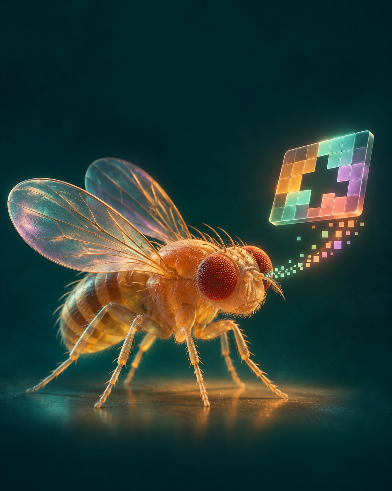
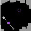
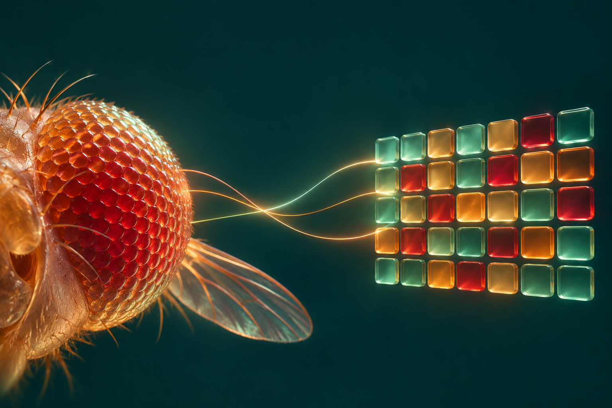

FLYGIBY MUSTAFA SAFDARI
I gave an AI
a map from
a fly’s eye.
One puzzle gave me a surprise.
See the experiment ↓
See the experiment ↓

Try a click. Watch what changes.
Figure out how to win.

The actual game screen. ARC-AGI-3 · r11l

Scientists mapped the fly’s visual cells.
I borrowed their layout to group
what my program saw on screen.
Another run?
15 actions vs 255.
On the remaining run, the fly-map version
cleared level one in 57 actions. The other
never cleared it within 600.
Across 25 games, the results were close.
First levels cleared, out of 75 runs each
The big gap belonged to one game.
That’s where I found the clue.